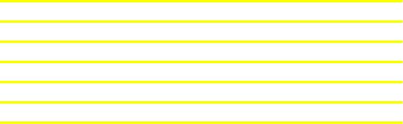

Visual communication is in my opinion the strongest way of communication we have. Shapes, colors, composition, fonts can create emotions and submitte a message in a few second. The right agencement of those component can make a difference
in our way of seeing things. I chosen to go in graphic design to develop my skills in creation. Projects after projects, I was never tired of them. When i finished my DEC, I wanted more. I wanted to push my abilities and creation skills
further. I decided to go in Computation Arts at Concordia University to learn programmation. I have acquired a good base in graphic design, but I wanted to be able to create, and also produce my work. I wandted to understand the behind the
scene to create in a more efficient way. For the past year, I have discovered the world of programmation and how much posibilities we have with this language. Animation and interaction are now mixing with shapes and colour to communicate.